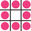

По умолчанию размер блока создается так, чтобы он был способен вместить контент. Чтобы установить собственные размеры блока, вы можете использовать свойства width и height. Чаще всего размер блока указывается в пикселях, процентах или единицах em. Пиксели наиболее популярны, поскольку позволяют точно контролировать размер.
При использовании процентов размер блока задается относительно размера окна браузера, а если блок заключен в другой блок, то относительно его размера. При использовании единиц em размер блока зависит от размера содержащегося в нем текста.
Некоторые страницы создаются таким образом, чтобы контент менял свой размер в соответствии с размером экрана.
Свойство min-width определяет наименьшую ширину блока при уменьшении окна браузера, а свойство max-width - наибольшую ширину блока при увеличении. Это очень полезные свойства, позволяющие гарантировать удобочитаемость страниц, особенно на маленьких экранах портативных устройств. Например, вы можете использовать свойство max-width, чтобы быть уверенным в том, что строки текста не окажутся слишком широкими в большом окне браузера. Свойство min-width позволит гарантировать, что строки текста не окажутся чересчур узкими.
Так же как и в случае с шириной блока, вы можете ограничить его высоту.
Свойство overflow сообщает браузеру, что делать, если объем контента блока превышает его размер. Это свойство может принимать одно из двух значений.
Управлять внешним видом блока можно с помощью трех следующих характеристик.
Свойство border-width используется для управления толщиной границ. Данное свойство может принимать значение в пикселях или одно из следующих значений: thin; medium; thick.
Для этого свойства нельзя задавать значение в процентах.
Вы можете установить размер отдельных границ, используя следующие четыре свойства: border-top-width; border-right-width; border-bottom-width; border-left-width.
Вы также можете указать разную толщину для четырех границ в одном свойстве.
border-width: 1px 2px 3px 4px;
В данном случае значения перечислены по часовой стрелке: верхняя, правая, нижняя, левая.
Вы можете настраивать стиль границы, используя свойство border-style. Оно способно принимать следующие значения:
Вы можете изменить стиль отдельных границ, используя следующие свойства: border-top-style; border-right-style; border-bottom-style; border-left-style.
Вы можете указать цвет границ, используя значения RGB, шестнадцатеричные коды или имена цветов.
Цветами отдельных границ блока можно управлять с помощью следующих свойств: border-top-color; border-right-color; border-bottom-color; border-left-color.
Кроме того, можно указать разные цвета для всех четырех границ в одном свойстве.
border-color: darkcyan deeppink darkcyan deeppink;
Здесь значения перечислены по часовой стрелке: верхняя, правая, нижняя и левая границы.
Свойство border позволяет одновременно указать толщину, стиль и цвет границы. При этом значения должны указываться именно в таком порядке.
Свойство padding позволяет указать, сколько места должно быть между содержимым элемента и его границами. Значение этого свойства чаще всего указывается в пикселях (хотя также можно использовать проценты и единицы em). При использовании процентных значений размер отступа рассчитывается в процентном отношении к размеру окна браузера (или окружающей блока, если он есть).
Обратите внимание: если для блока указана ширина, то значение отступа прибавляется к значению ширины.
Вы можете задать различные значения для каждой стороны блока, используя свойства: padding-top; padding-right; padding-bottom; padding-left.
Вы также можете использовать стенографическое свойства, где значения перечисляются по часовой стрелке:
верх, правая сторона, низ, левая сторона:
padding: 10px 5px 3px 1px;
Значение свойства padding не наследуется дочерними элементами таким же образом, как значение color свойства font-family, поэтому вам нужно указать величину отступов для каждого элемента , которому они необходимы.
Свойство margin определяет интервал между блоками. Его значение обычно задается в пикселях, однако вы можете использовать проценты или единицы em. Если один блок располагается поверх другого, то будут использоваться поля, имеющие наибольшее значение.
Обратите внимание: если для блока указана ширина, то величина полей прибавляется к ее значению.
Вы можете указать значения для каждой стороны блока, используя свойства: margin-top; margin-right; margin-bottom; margin-left.
Вы также можете использовать стенографическое свойство, где значения перечисляются по часовой стрелке:
верх, право, низ, лево:
margin: 1px 2px 3px 4px;
Вам также может встретиться следующее выражение:
margin: 10px 20px;
Оно означает, что значения левого и правого полей должны быть равны 10 пикселям, а значения верхнего и нижнего - 20 пикселям. Подобное краткое выражение может быть применено к значениям отступов.
Значение свойства margin не наследуется дочерними элементами, поэтому вам нужно указать величину полей для каждого элемента, которому они необходимы.
Если вы хотите поместить блок в центре страницы (или в центре элемента, в котором он находится), вы можете присвоить значение auto свойствам margin-left и margin-right.
Чтобы центрировать блок на странице, вам нужно указать его ширину (width), в противном случае он займет всю ширину страницы.
После указания ширины блока, задание значения auto для правого и левого полей дает браузеру команду создать одинаковый интервал с каждого края блока. Это приведет к центрированию блока на странице (или в содержащем его элементе).
Свойство display позволяет превратить встроенный элемент в блочный и наоборот, а также может использоваться для скрытия элемента на странице. Оно способно принимать следующие значения.
Свойство visibility позволяет скрывать блоки, но при этом оставлять пустое пространство на месте элемента. Данное свойство может принимать два значения.
Если для свойства visibility задано значение hidden, то на месте элемента появится пустое пространство.
Если вы хотите избежать появления пустого пространства, следует использовать свойство display со значением none
Обратите внимание, что посетитель может просмотреть содержимое любого скрытого элемента в исходном коде страницы.
Свойство border-image применяет к границам блока изображение. Оно разделяет фоновое изображение на девять частей.
Угловые фрагменты всегда располагаются в этих позициях, однако вы можете выбрать, будут боковые фрагменты растягиваться или повторяться.
Этому свойству требуется следующая инфомрация: URL-адрес изображения; расположение мест разделения изображения; что делать с боковыми фрагментами, при этом допустимые значения могут быть следующими:
РОССИЯ
Свойство box-shadow позволяет добавить тень вокруг блока. Оно работает также, как свойство text-shadow.
Данное свойство должно использовать, по крайней мере, первое из следующих значений, а также цвет.
Для создания внутренней тени также можно использовать ключевое слово inset, добавленное перед перечисленными значениями.
В спецификации CSS3 появилась возможность создания закругленных углов блока с помощью свойства border-radius. Значение указывает радиус в пикселях.
Вы можете указать различные значения для каждого угла блока следующим образом: border-top-right-radius; border-bottom-right-radius; border-bottom-left-radius; border-top-left-radius.
Вы также можете использовать стенографические свойства (по часовой стрелке: верхний правый угол, нижний правый угол, нижний левый угол, верхний левый угол).
Для создания более сложных форм вы можете задать различные расстояния для горизонтальных и вертикальных частей округлых углов.
Например, данное выражение создаст закругление, ширина которого будет больше высоты:
border-radius: 80px 50px;
Вы можете настроить каждый угол в отдельности, используя разные свойства:
border-top-left-radius: 80px 50px;
Для одноименной настройки всех углов также существует стенографическое свойство: сначала вы указываете четыре горизонтальных значения / затем четыре вертикальных значения. Вы также можете взять круг, взяв за основу квадрат и задав его высоту в качестве значения свойства border-radius.